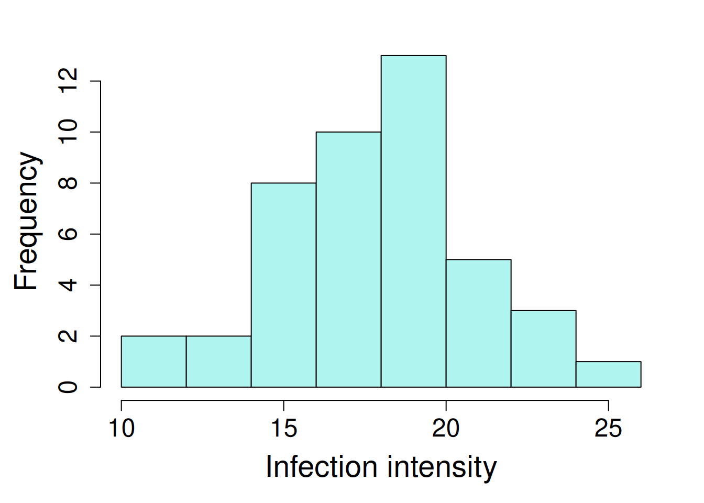
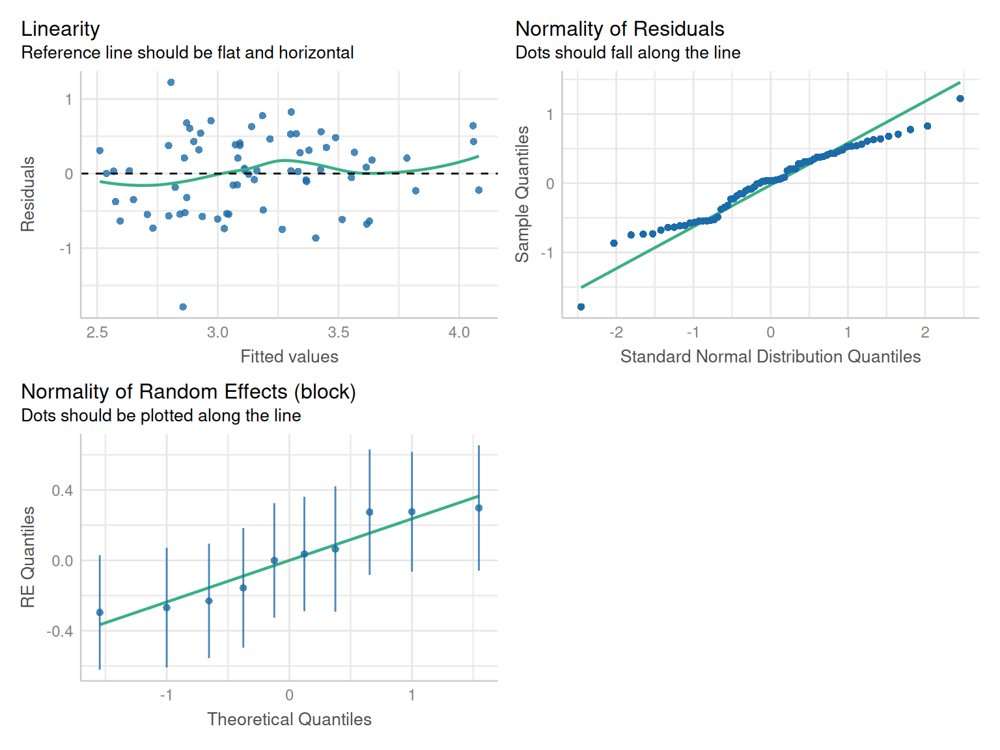
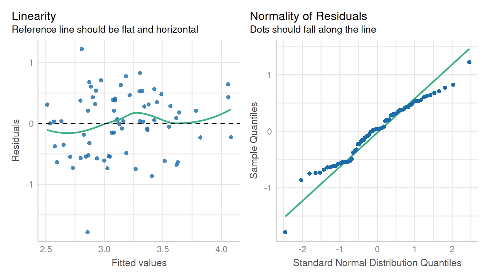

library(lme4); library(lmerTest); library(emmeans)
library(dplyr); library(broom.mixed); library(performance)6 RCBD Design with Several Crossed Factors
6.1 Background
Factorial design involves studying the impact of multiple factors simultaneously. Each factor can have multiple levels, and combinations of these levels form the experimental conditions. This design allows us to understand the main effects of individual factors and their interactions on the response variable. The statistical model for factorial design is: \[y_{ij} = \mu + \tau_i+ \beta_j + (\tau\beta)_{ij} + \epsilon_{ij}\] Where:
\(\mu\) = experiment mean
\(\tau\) = effect of factor A
\(\beta\) = effect of factor B
\(\tau\beta\) = interaction effect of factor A and B.
Assumptions of this model includes: independent and identically distributed error terms with a constant variance \(\sigma^2\).
6.2 Example Analysis
First step is to load the libraries required for the analysis:
library(nlme); library(broom.mixed); library(emmeans)
library(dplyr); library(performance)The data used in this example analysis is from the agridat package (data set “yates.missing”). This data comprises a infection intensity (y) response of potato tubers to different levels of nitrogen (n), phosphorus (p), potassium (k) treatments.
The objective of this example is evaluate the individual and interactive effect of “n”, “p”, and “k” treatments on bean yield.
Note, while importing the data, d, n, p, and k were converted into factor variables using the mutate() function from dplyr package. This helps in reducing the extra steps of converting each single variable to factor manually.
data1 <- read.csv(here::here("data", "factorial.csv"))| block | blocking unit |
| n | nitrogen treatment, 2 levels |
| p | phosphorus treatment, 2 levels |
| k | potassium treatment, 2 levels |
| y | intensity of infection of potato tubers |
6.2.1 Data Integrity Checks
- Check structure of the data
First step is to Verify the class of variables, where rep, block, d, n, p, and k are supposed to be a factor/character and y should be numeric.
str(data1)'data.frame': 80 obs. of 5 variables:
$ block: chr "B01" "B01" "B01" "B01" ...
$ y : num 3.55 2.3 3.96 2.99 NA 2.36 2.16 3.16 2.29 4.03 ...
$ n : int 1 0 1 1 0 0 1 0 1 0 ...
$ p : int 1 1 1 0 1 0 0 0 1 1 ...
$ k : int 1 1 0 1 0 1 0 0 1 1 ...In this data, treatment factors, ‘n’, ‘p’, & ‘k’ are integers, we need to convert these variables to factor.
dat2 <- data1 |> mutate(n = as.factor(n),
p = as.factor(p),
k = as.factor(k))- Inspect the independent variables
we are inspecting levels of independent variables to make sure the expected levels are present in the data.
table(dat2$n, dat2$p, dat2$k), , = 0
0 1
0 10 10
1 10 10
, , = 1
0 1
0 10 10
1 10 10The design looks well balanced.
- Check the extent of missing data
colSums(is.na(dat2))block y n p k
0 9 0 0 0 There are 9 missing values in this data set. Let’s look into those missing values
dat2[is.na(dat2$y),] block y n p k
5 B01 NA 0 1 0
17 B03 NA 1 1 1
40 B05 NA 0 0 0
47 B06 NA 1 0 0
48 B06 NA 0 0 0
50 B07 NA 0 1 1
54 B07 NA 0 0 1
60 B08 NA 1 0 1
62 B08 NA 0 0 1These values are randomly missing in different blocks, and treatments. These are not from any specific block or treatment factor. There are different methods of handling with missing values, but for this chapter we will exclude these missing values using na.action = exclude option in model.
- Inspect the dependent variable
This is the last step is to inspect the dependent variable to ensure it looks as expected.

hist(dat2$y, main = NA, xlab = "Infection intensity")No extreme values are observed in the dependent variable, and the distribution looks as expected.
6.2.2 Model fitting
Model fitting with R is exactly the same as shown in previous chapters: we need to include all fixed effects, as well as the interaction, which is represented by using the colon indicator ‘:’.
The model syntax is:
yield ~ n + p + k + n:p + n:k + p:k + n:p:k
which can be abbreviated as:
yield ~ n*p*k
In this analysis, “n”, “p”, & “k” are fixed factors and block is a random effect.
model1_lmer <- lmer(y ~ n*p*k + (1|block),
data = dat2,
na.action = na.exclude)
tidy(model1_lmer)# A tibble: 10 × 8
effect group term estimate std.error statistic df p.value
<chr> <chr> <chr> <dbl> <dbl> <dbl> <dbl> <dbl>
1 fixed <NA> (Intercept) 3.27 0.224 14.6 55.4 1.31e-20
2 fixed <NA> n1 -0.404 0.279 -1.45 54.1 1.54e- 1
3 fixed <NA> p1 -0.116 0.281 -0.413 54.9 6.81e- 1
4 fixed <NA> k1 -0.176 0.290 -0.607 55.5 5.47e- 1
5 fixed <NA> n1:p1 0.593 0.384 1.54 54.1 1.28e- 1
6 fixed <NA> n1:k1 1.10 0.395 2.77 54.2 7.56e- 3
7 fixed <NA> p1:k1 -0.169 0.396 -0.427 54.6 6.71e- 1
8 fixed <NA> n1:p1:k1 -1.07 0.546 -1.95 54.0 5.64e- 2
9 ran_pars block sd__(Intercep… 0.290 NA NA NA NA
10 ran_pars Residual sd__Observati… 0.573 NA NA NA NA model2_lme <- lme(y ~ n*p*k,
random = ~ 1|block,
data = dat2,
na.action = na.exclude)
tidy(model2_lme)# A tibble: 10 × 8
effect group term estimate std.error df statistic p.value
<chr> <chr> <chr> <dbl> <dbl> <dbl> <dbl> <dbl>
1 fixed <NA> (Intercept) 3.27 0.224 54 14.6 2.28e-20
2 fixed <NA> n1 -0.404 0.279 54 -1.45 1.54e- 1
3 fixed <NA> p1 -0.116 0.281 54 -0.413 6.81e- 1
4 fixed <NA> k1 -0.176 0.290 54 -0.607 5.47e- 1
5 fixed <NA> n1:p1 0.593 0.384 54 1.54 1.28e- 1
6 fixed <NA> n1:k1 1.10 0.395 54 2.77 7.57e- 3
7 fixed <NA> p1:k1 -0.169 0.396 54 -0.427 6.71e- 1
8 fixed <NA> n1:p1:k1 -1.07 0.546 54 -1.95 5.64e- 2
9 ran_pars block sd_(Intercept) 0.290 NA NA NA NA
10 ran_pars Residual sd_Observation 0.573 NA NA NA NA
Note
The tidy() function from the broom.mixed package provides a short summary output of the model.
6.2.3 Check Model Assumptions
check_model(model1_lmer, check = c('qq', 'linearity', 'reqq'), detrend=FALSE, alpha=0)
check_model(model2_lme, check = c('qq', 'linearity'), detrend=FALSE, alpha=0)
The linearity and homogeneity of variance plots show no trend. There are modest departures in the normality of residuals as indicated by the heavy tails.
6.2.4 Inference
We can obtain an ANOVA table for the linear mixed model using the function anova(), which works for both lmer() and lme() models.
anova(model1_lmer, type = "3")Type III Analysis of Variance Table with Satterthwaite's method
Sum Sq Mean Sq NumDF DenDF F value Pr(>F)
n 0.53388 0.53388 1 54.345 1.6265 0.20762
p 0.50458 0.50458 1 54.743 1.5372 0.22032
k 0.00778 0.00778 1 55.315 0.0237 0.87823
n:p 0.01620 0.01620 1 54.025 0.0494 0.82502
n:k 1.38802 1.38802 1 54.476 4.2286 0.04455 *
p:k 2.13878 2.13878 1 54.897 6.5157 0.01350 *
n:p:k 1.24751 1.24751 1 54.038 3.8005 0.05644 .
---
Signif. codes: 0 '***' 0.001 '**' 0.01 '*' 0.05 '.' 0.1 ' ' 1anova(model2_lme, type = "marginal") numDF denDF F-value p-value
(Intercept) 1 54 212.59527 <.0001
n 1 54 2.09204 0.1538
p 1 54 0.17072 0.6811
k 1 54 0.36786 0.5467
n:p 1 54 2.38310 0.1285
n:k 1 54 7.69884 0.0076
p:k 1 54 0.18234 0.6711
n:p:k 1 54 3.80049 0.0564Here we did not observe any difference in group variance of interaction effects. Among all treatment factors, only “p” had a significant effect on bean yield when evaluated at significance threshold of 0.05.
Let’s find estimates for some of the factors such as N, P and the N-by-K interactions in order to understand the combined effect of nitrogen and potassium on bean yield.
emmeans(model1_lmer, specs = ~ n)NOTE: Results may be misleading due to involvement in interactions n emmean SE df lower.CL upper.CL
0 3.08 0.135 16.7 2.79 3.36
1 3.25 0.132 15.4 2.97 3.53
Results are averaged over the levels of: p, k
Degrees-of-freedom method: kenward-roger
Confidence level used: 0.95 emmeans(model1_lmer, specs = ~ p)NOTE: Results may be misleading due to involvement in interactions p emmean SE df lower.CL upper.CL
0 3.25 0.135 16.8 2.97 3.54
1 3.08 0.132 15.4 2.80 3.36
Results are averaged over the levels of: n, k
Degrees-of-freedom method: kenward-roger
Confidence level used: 0.95 emmeans(model1_lmer, specs = ~ n:p)NOTE: Results may be misleading due to involvement in interactions n p emmean SE df lower.CL upper.CL
0 0 3.18 0.171 35.1 2.83 3.53
1 0 3.32 0.164 31.4 2.99 3.66
0 1 2.98 0.164 31.5 2.65 3.31
1 1 3.18 0.161 30.0 2.86 3.51
Results are averaged over the levels of: k
Degrees-of-freedom method: kenward-roger
Confidence level used: 0.95 emmeans(model2_lme, specs = ~ n)NOTE: Results may be misleading due to involvement in interactions n emmean SE df lower.CL upper.CL
0 3.08 0.135 9 2.77 3.38
1 3.25 0.132 9 2.96 3.55
Results are averaged over the levels of: p, k
Degrees-of-freedom method: containment
Confidence level used: 0.95 emmeans(model2_lme, specs = ~ p)NOTE: Results may be misleading due to involvement in interactions p emmean SE df lower.CL upper.CL
0 3.25 0.135 9 2.95 3.56
1 3.08 0.132 9 2.78 3.38
Results are averaged over the levels of: n, k
Degrees-of-freedom method: containment
Confidence level used: 0.95 emmeans(model2_lme, specs = ~ n:p)NOTE: Results may be misleading due to involvement in interactions n p emmean SE df lower.CL upper.CL
0 0 3.18 0.171 9 2.79 3.57
1 0 3.32 0.164 9 2.95 3.69
0 1 2.98 0.164 9 2.61 3.35
1 1 3.18 0.161 9 2.82 3.55
Results are averaged over the levels of: k
Degrees-of-freedom method: containment
Confidence level used: 0.95 The code above is calculating the estimated marginal means for main effects of “n” and “p” and their interaction (n:p) effect on infection intensity in potato tubers. Make sure to pay attention to the warning message that means are averaged over the “k” levels. It’s an important detail to take into account when conducting inference and making conclusions. When working with factorial designs, make sure to interpret ANOVA and estimated marginal means for main and interaction effects with care.